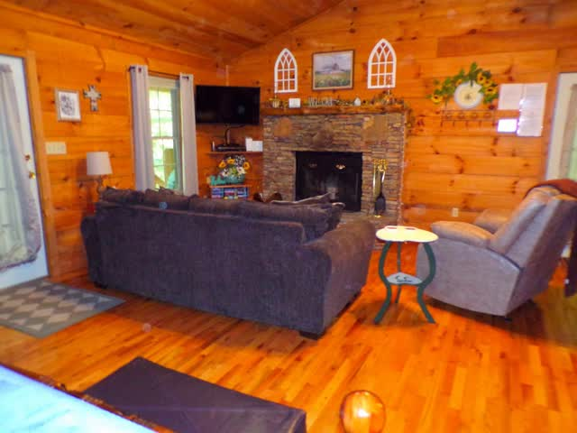
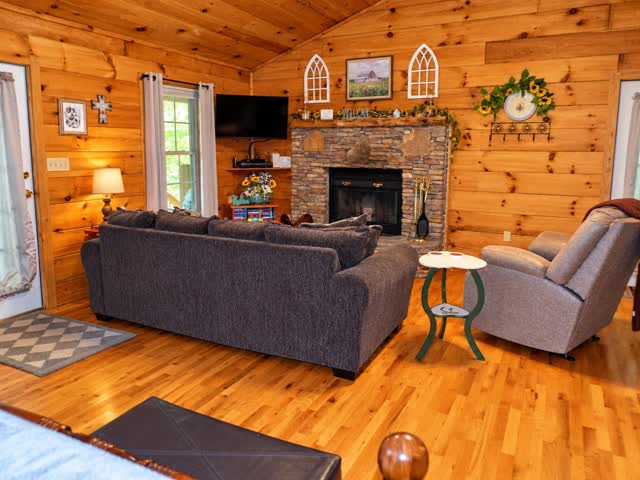
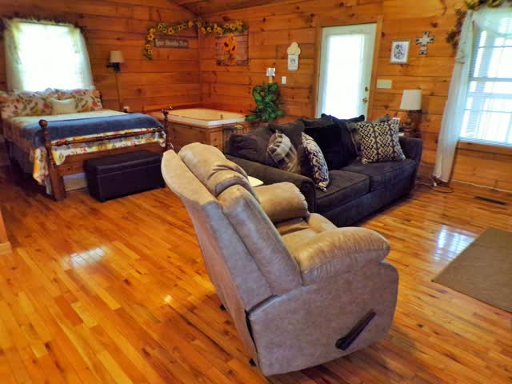
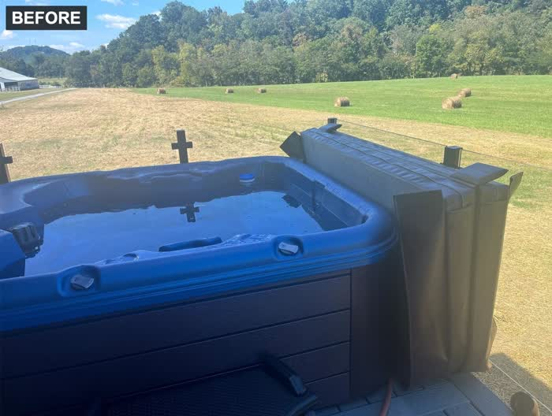
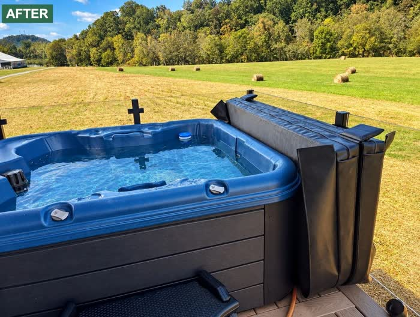

Our work
Property photographs before and after enhancement: balanced light, true color, straight lines. Shown with the owners' permission.









Want to see your own place like this? Send a link to your listing and we will edit a photograph as a free sample.
Tell us about your photographs.
Send a link to your listing, or attach a few photographs. We reply by email.
info@srmjbusiness.com Email us